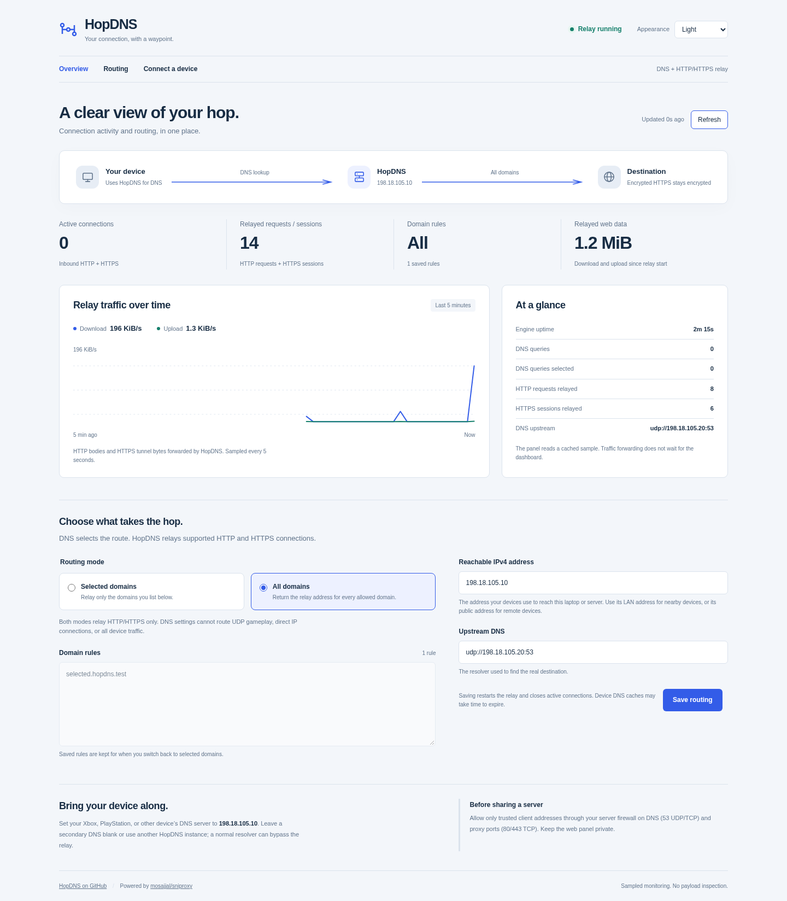

Connect your console with HopDNS
HopDNS lets supported web connections from your console go through a computer on your home network. It runs on Windows, macOS, and Linux and opens its settings in your browser.
Download HopDNSSign in to GitHub, open the latest successful build, then pick the archive for your computer under Artifacts. Apple Silicon Macs use darwin-arm64. Most Windows PCs use windows-amd64.

Set up your console
- Connect both devices to your home network. Find your computer’s local IPv4 address in its network settings. It often starts with
192.168. - Extract the download and start HopDNS. Open Terminal in the extracted folder. On Mac or Linux, run
./hopdns --traffic-bind 192.168.1.20 --public-ip 192.168.1.20. In Windows PowerShell, use.\hopdns.exein place of./hopdns. Replace both example addresses with your own. - Open the panel. If the browser does not open, visit localhost:48741 on your computer. Keep HopDNS running. If it reports a permissions or port error, see the native setup reference.
- Set your console’s DNS manually. Use the same IPv4 address as primary DNS and run the console’s network test. To undo the change, set DNS back to Automatic.
HopDNS handles compatible web connections. Online gameplay that uses UDP follows the console’s normal network route.